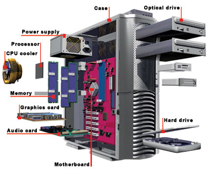

How to build
ATX mid-towers are by far the most popular choice for most mainstream and enthusiast builds, typically because they usually provide the best performance-per-dollar value ratio in terms of cost and available space. Most well-designed models will come with enough room for a full size ATX motherboard and PS/2 power supply, several hard drives and optical drives, and several expansion cards, all without occupying an inordinate amount of space. Speaking of expansion cards, most mid-towers will come with seven expansion slots, which should provide ample space for two dual-slot graphics cards, as well as some additional space for other expansion cards like WiFi, USB and more.
Notice how we said there was room for only two dual slot graphics cards? Even though many mid-tower cases do have enough room for three or even perhaps four graphics, we don’t recommend such configurations due to the heat and space issues that usually arise. If you’re dead set on a three or four-way SLI or Crossfire setup, then a full tower case is likely a much better choice.
MicroATX mini-towers are a more refined and compact version of their larger mid-tower counterparts. They are mainly used in business settings and for portable gaming rigs where all-out performance is less of a priority than having a case with a smaller footprint and that is easier to transport. Mini-towers often come with support for at least one 5.25” optical drive and several hard drives. Finally, since microATX motherboards support a maximum of four expansion slots, most mini-towers can support up to two dual-slot graphics cards, depending on the capabilities of the motherboard.
Mini-ITX cubes and towers come in a variety of shapes and sizes, with their key feature being that they only support mini-ITX motherboards and therefore usually impose the most limitations on which parts can be used. The advantage is that mini-ITX cases are very space efficient and usually present a minimal footprint, which makes them popular in office environments and for ultra-portable gaming rigs. Typically, they only support SFX form factor power supplies, although an increasing number of cases support small PS/2 power supplies. Mini-ITX cases generally lack support for 5.25” optical drives, though many do have enough room to support a thin, slot-loading optical drive. Finally, mini-ITX cases have a maximum of two expansion slots, which limits them to, at most, a single, compact graphics card.
Desktop/HTPC cases represent the style of case that used to sit underneath monitors to raise them up to eye level. Nowadays they’ve mainly been relegated to use as HTPC (home theater PC, or media center PC) chassis, where they’ve flourished. They come in a variety of sizes, from something so small it needs an external power supply, to mid-size mini-ITX cases like the Raven RVZ01 (pictured bottom-center, above), to what are essentially horizontal mid-tower cases. Many of the HTPC cases available usually support a horizontally-mounted, full-size graphics card through the use of a riser card.
If you want to go even smaller than the examples above, that small yellow box (also pictured above) is called the Brix Pro, and it’s the smallest unit we’ve tested, aside from a NUC (Next Unit of Computing, or a mini PC). It comes with support for two notebook-size memory modules, an on-board mSATA SSD, and room for a 2.5” SSD or hard drive. If that’s still not small enough, then consider buying an NUC, which is even smaller. Most NUCs come as a complete computer, finished off by adding your choice of notebook-size memory and a 2.5” SSD or hard drive.
By this point, you should have a pretty good idea of what the purpose of your build is and what size of case you want to get. If you need a bit of help picking the perfect case, we’ve got you covered with a list of the best computer cases for the money.
